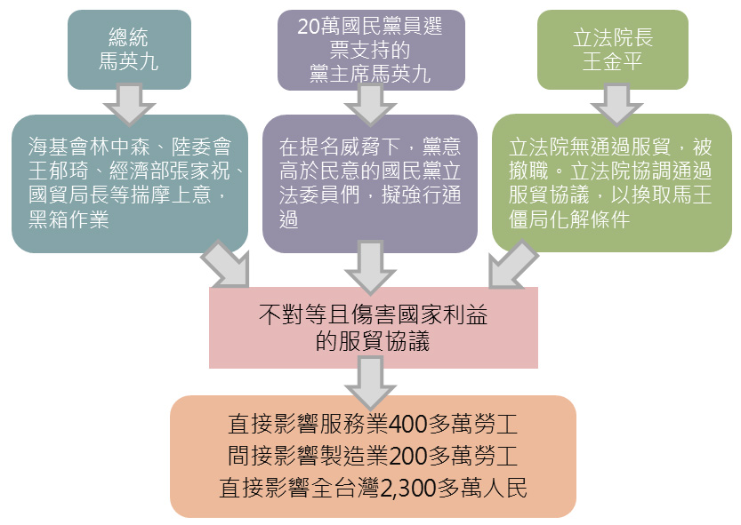
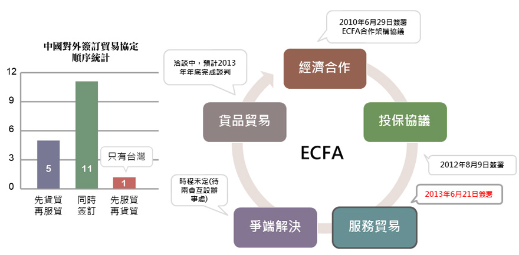
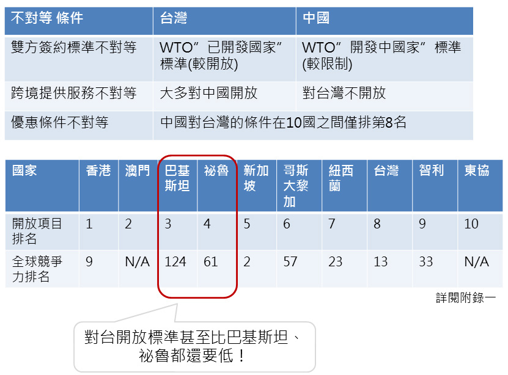
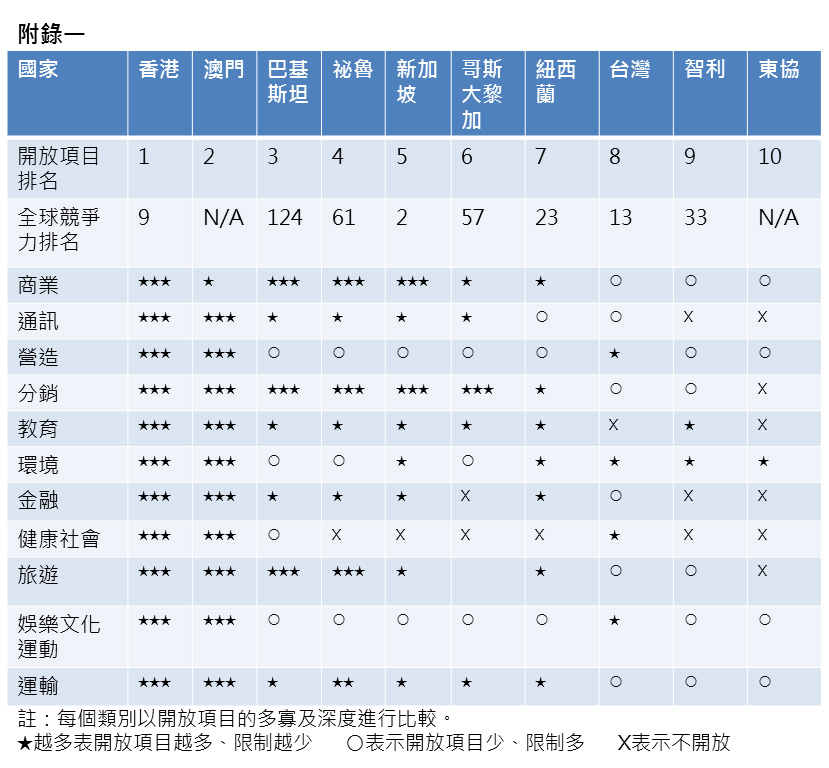
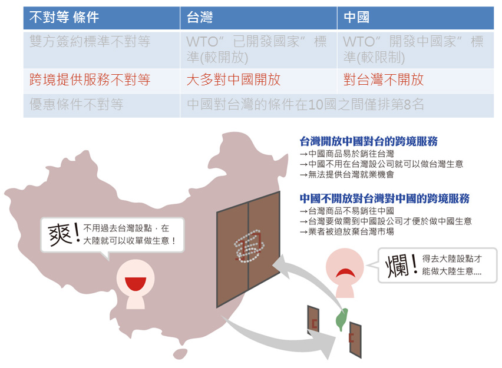
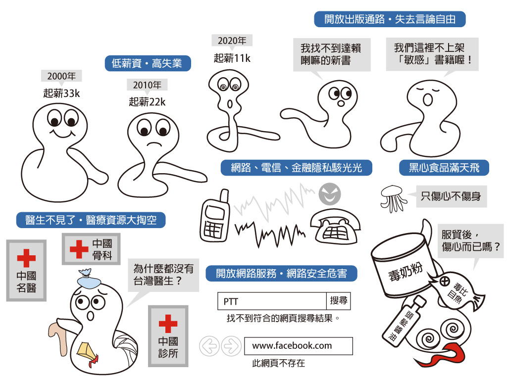
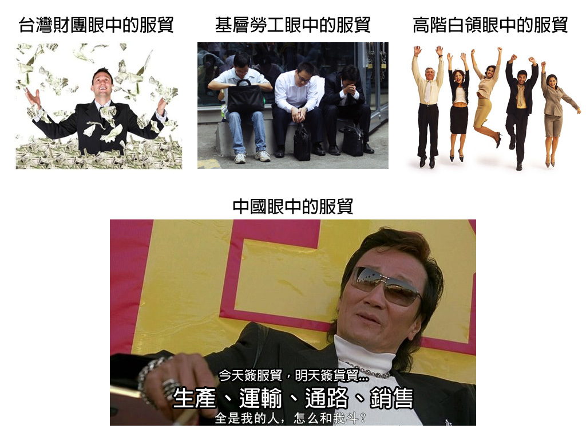

黑箱服貿懶人包
公民覺醒聯盟


服貿簡介
什麼是「兩岸服務業貿易協議」？
- 《兩岸服務業貿易協議》，簡稱『服貿協議』。
- 是台灣與中國在ECFA架構下展開的服務業貿易協議。
協議內容
- 載明雙方相互開放服務業市場之內容。
- 規範任一方政府，若採取可能影響服務貿易之措施時，其應遵守之義務。
- 針對適用服貿協議之服務提供者的作出具體規定，如：適用之對象、條件及取得適用資格等。
兩岸服貿協議文本及附件：http://www.ecfa.org.tw/SerciveTradeAgreement1.aspx
服貿協議的決策結構

你不知道的政府服貿黑手
- 服貿：影響就業
- 貨貿：影響物價與GDP
- 國際慣例：先貨貿再服貿，或同時簽訂
- ECFA文本中並未承諾簽署服貿具體時程，也未承諾先服貿再貨貿

你覺得服貿條件對等嗎？


跨境服務不對等

歷史會重演嗎—香港的慘痛前例

香港目前狀況：香港2003年簽署CEPA後
- 影響一 房價：
六年飆漲近六成，住屋物價指數(指租金)每年7%成長 - 影響二 薪資：
香港15到24歲的年青人薪水，2001年是3萬港幣，10年後仍是3萬，但是各種物價已大幅度上漲。進出口批發零售業、運輸倉儲通訊服務業及製造業的實質工資從2004年至2010年是一路下滑。 - 影響三 就業：
目前已有70萬名中國低薪勞工進入香港，從中國至香港定居未足七年之人數佔其總人口的2.5%。高階人才外流中國。 - 影響四 生活品質：
香港是全球已開發國家中GINI係數(衡量所得差距的指標, 目前是0.54)最高，大量的中產階級消失不見。
詳見http://www.southnews.com.tw/polit/specil_a/061/00/00049.htm
簽署後的悲慘世界

中國政府黑心服貿策略：今天讓利，明天通吃

服貿問題求解
國內應先立法國會監督政府簽署貿易協議
- 簽過投保協議，但未簽爭端解決協議，台商安全仍未受保障
- 只由雙方協商解決，則必然是實力決定一切。因此，我們強調：面對中國，爭端解決協議應先於服貿協議！
兩岸應先簽爭端解決協議，再簽服貿
重啟談判
- 現行「大陸地區人民來臺投資許可辦法」對中國開放，我方仍擁有主控權，開放條件易修改；然而服貿協議的開放不僅三年內不能更改開放承諾，且只能更改為更開放，需格外慎重。
- 服貿協議非藍綠之爭，是我人民生計和生活品質是否確保的問題，請大家挺身捍衛自己的權益。